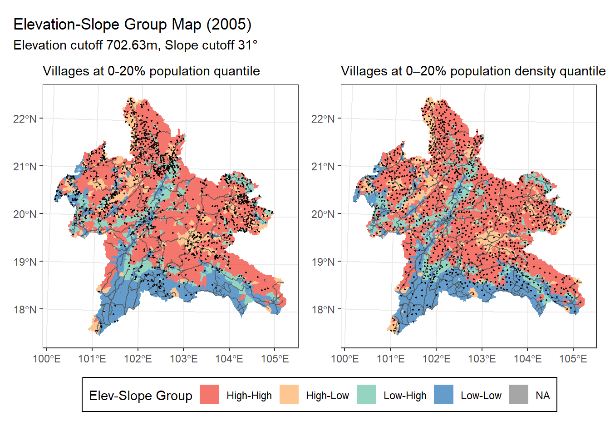
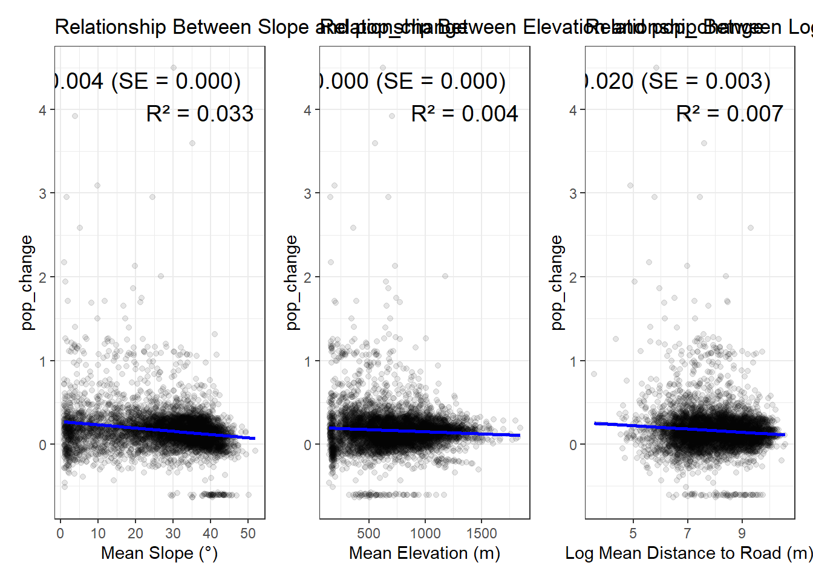
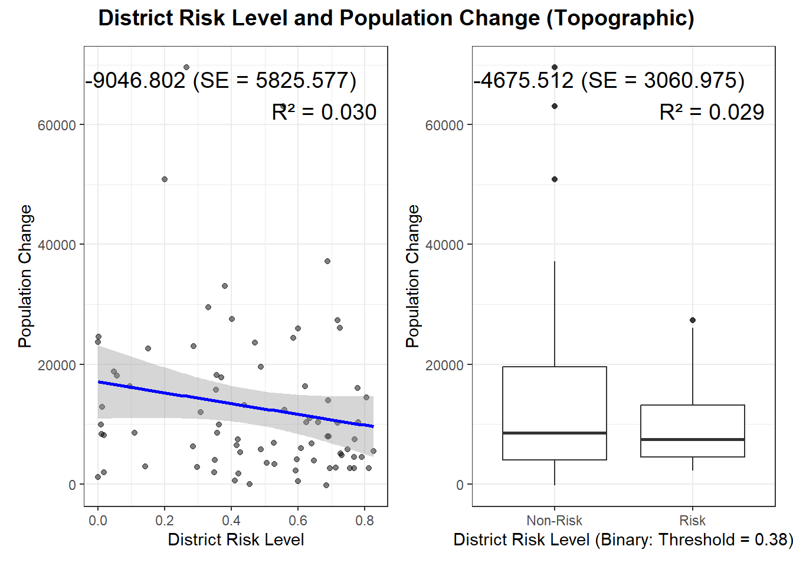

In an effort to reduce both domestic consumption and regional opium production, the Chinese government launched the Opium Replacement Program (ORP) in 2006. This initiative was designed to provide funding for Chinese companies to invest in opium-cultivating regions of Laos and Myanmar by supporting the transition of local farmers to cash crops such as rubber, maize, and sugarcane, thereby fostering broader socio-economic development in affected areas (J. Lu and Dwyer 2023; UNODC 2015; TNI 2010). Initially proposed as part of China’s broader “Going Out” strategy in the early 2000s to encourage overseas investment, the ORP was officially initiated in 2004 and subsequently formalized and expanded in 2006 when it was incorporated into China’s five-year plan with dedicated funding and policy support. Its stated aim is to replace opium cultivation in the Golden Triangle with licit, high-value cash crops, thus improving local livelihoods and promoting economic cooperation. To incentivize participation, Chinese companies involved in the program are offered tax exemptions within import quotas, along with subsidies and interest-free loans (TNI 2010; Cohen 2009; J. N. Lu 2019). Approximately 7.2 million USD (50 million RMB) in central funding, supplemented by 4.3 million USD (30 million RMB) from provincial matching funds, was allocated to the program. Companies must manage large-scale investment projects covering over 600 hectares (10,000 mu) to qualify, and these funds support the establishment of plantations for crops such as rubber, maize, and sugarcane.
Despite the policy’s initial aim of nudging firms to invest directly to the opium farmers, firms had lots of autonomy throughout the investment activity. To be more specific, firms established locations where it favors firms’ business operations rather than cooperate directly with opium farmers. By conducting several interviews with different stakeholders, J. N. Lu (2019) argues that the ORP attempts ‘’replacement by displacement’’. That is, the replacement of opium cultivation is achieved by drawing opium farmers out of opium fields by providing labor opportunities in alternative crop plantations which are often established at regions near road and with low elevation.
Experimental Design
Main Hypothesis: The introduction of the ORP program decreased the opium cultivation by shifting labor out of opium cultivating regions.
Ideal experimental design: Randomly pick villages and introduce ORP in some villages and leave rest of the villages as control group. Then check whether villages with ORP experience population increase.
Issue:
Randomization: The treatment are not received randomly. Villages are treated based on whether the village is suitable for business operations (i.e. low elevation, near road, etc.). Thus, we might want to characterize locations suitable for ORP alternative crop plantation, using distance to road, slope, and elevation.
Refined Hypothesis: Controlling for geographic accessibility and baseline opium risk, village exposed to ORP experienced a greater reduction in opium cultivation compared to similar, non-treated villages.
Mechanism:
First-order Impact
Local laborers shift from opium cultivation to wage labor on these plantations.
Farmers/opium farmers migrate to ORP zones for better opportunities (replacement by displacement).
Second-order Impact
Schooling and child labor: with stable ORP income, some households pull children from labor to school (Sviatschi 2022; UNODC 2005)
ORP likely impacted population dynamics in Laos, especially through the relocation of labor from upland opium-growing areas to lowland agricultural and economic centers. We will explore such dynamics in the following section to better characterize such characteristics and check the possibility of the ‘’replacement by displacement’’ mechanism.
Population and Housing Census. To understand these changes, we first analyze Laos’ Population and Housing Census (2005) to establish a pre-ORP baseline. We assess how population, population density, and poverty levels relate to terrain characteristics (elevation, slope), road accessibility, and how they evolved between 2005 and 2015.
World Pop. Then we will use WorldPop data, which is trained using machine learning technique to simulate the population distribution between 2000 and 2020. This will add additional information on the population dynamics to the Population Housing Census information which is limited to only 2005 and 2015.
ORP Program. Then we will check whether the observed population dynamic is affected by ORP programs using official ORP records.
Population and Housing Census
Baseline Patterns in 2005 and 2015
Population and density were higher in accessible, low-elevation/slope areas
Villages located at lower elevations, with gentler slopes, and closer to national or provincial roads had significantly higher population and population density. Among these characteristics, slope showed the strongest negative association, followed by elevation and road distance.
Slope, elevation, and distance to road should be treated as core baseline covariates.
Code
# Fit linear modelmodel_slope <-lm(log(population) ~ mean_slope, data = v_2005)summary_slope <-summary(model_slope)# Extract valuescoef_slope <- summary_slope$coefficients["mean_slope", "Estimate"]se_slope <- summary_slope$coefficients["mean_slope", "Std. Error"]r2_slope <- summary_slope$r.squared# Format labellabel_slope <-sprintf("β = %.3f (SE = %.3f)\nR² = %.3f", coef_slope, se_slope, r2_slope)# Plotp1 <-ggplot(v_2005, aes(x = mean_slope, y =log(population))) +geom_point(alpha =0.5) +geom_smooth(method ="lm", color ="blue", se =TRUE) +annotate("text", x =Inf, y =Inf, label = label_slope, hjust =1.1, vjust =1.5, size =5) +labs(title ="Slope and Population",x ="Mean Slope (°)",y ="Log Population" ) +theme_bw()# Fit linear modelmodel_elev <-lm(log(population) ~ mean_elev, data = v_2005)summary_elev <-summary(model_elev)# Extract valuescoef_elev <- summary_elev$coefficients["mean_elev", "Estimate"]se_elev <- summary_elev$coefficients["mean_elev", "Std. Error"]r2_elev <- summary_elev$r.squared# Format labellabel_elev <-sprintf("β = %.3f (SE = %.3f)\nR² = %.3f", coef_elev, se_elev, r2_elev)# Plotp2 <-ggplot(v_2005, aes(x = mean_elev, y =log(population))) +geom_point(alpha =0.5) +geom_smooth(method ="lm", color ="blue", se =TRUE) +annotate("text", x =Inf, y =Inf, label = label_elev, hjust =1.1, vjust =1.5, size =5) +labs(title ="Elevation and opulation",x ="Mean Elevation (m)",y ="Log Population" ) +theme_bw()# Fit linear model with log-transformed mean_distmodel_log_dist <-lm(log(population) ~log(mean_dist), data = v_2005)summary_log_dist <-summary(model_log_dist)# Extract valuescoef_log_dist <- summary_log_dist$coefficients["log(mean_dist)", "Estimate"]se_log_dist <- summary_log_dist$coefficients["log(mean_dist)", "Std. Error"]r2_log_dist <- summary_log_dist$r.squared# Format annotation labellabel_log_dist <-sprintf("β = %.3f (SE = %.3f)\nR² = %.3f", coef_log_dist, se_log_dist, r2_log_dist)# Plotp3 <-ggplot(data = v_2005, aes(x =log(mean_dist), y =log(population))) +geom_point(alpha =0.5) +geom_smooth(method ="lm", color ="blue", se =TRUE) +annotate("text", x =Inf, y =Inf, label = label_log_dist, hjust =1.1, vjust =1.5, size =5) +labs(title ="Distance to Road and Population",x ="Log Mean Distance to Road (m)",y ="Log Population" ) +theme_bw()# Fit linear modelmodel_slope <-lm(log(population_density) ~ mean_slope, data = v_2005)summary_slope <-summary(model_slope)# Extract valuescoef_slope <- summary_slope$coefficients["mean_slope", "Estimate"]se_slope <- summary_slope$coefficients["mean_slope", "Std. Error"]r2_slope <- summary_slope$r.squared# Format labellabel_slope <-sprintf("β = %.3f (SE = %.3f)\nR² = %.3f", coef_slope, se_slope, r2_slope)# Plotp4 <-ggplot(v_2005, aes(x = mean_slope, y =log(population_density))) +geom_point(alpha =0.5) +geom_smooth(method ="lm", color ="blue", se =TRUE) +annotate("text", x =Inf, y =Inf, label = label_slope, hjust =1.1, vjust =1.5, size =5) +labs(title ="Slope and Population Density",x ="Mean Slope (°)",y ="Log Population Density" ) +theme_bw()# Fit linear modelmodel_elev <-lm(log(population_density) ~ mean_elev, data = v_2005)summary_elev <-summary(model_elev)# Extract valuescoef_elev <- summary_elev$coefficients["mean_elev", "Estimate"]se_elev <- summary_elev$coefficients["mean_elev", "Std. Error"]r2_elev <- summary_elev$r.squared# Format labellabel_elev <-sprintf("β = %.3f (SE = %.3f)\nR² = %.3f", coef_elev, se_elev, r2_elev)# Plotp5 <-ggplot(v_2005, aes(x = mean_elev, y =log(population_density))) +geom_point(alpha =0.5) +geom_smooth(method ="lm", color ="blue", se =TRUE) +annotate("text", x =Inf, y =Inf, label = label_elev, hjust =1.1, vjust =1.5, size =5) +labs(title ="Elevation and Population Density",x ="Mean Elevation (m)",y ="Log Population Density" ) +theme_bw()# Fit linear model with log-transformed mean_distmodel_log_dist <-lm(log(population_density) ~log(mean_dist), data = v_2005)summary_log_dist <-summary(model_log_dist)# Extract valuescoef_log_dist <- summary_log_dist$coefficients["log(mean_dist)", "Estimate"]se_log_dist <- summary_log_dist$coefficients["log(mean_dist)", "Std. Error"]r2_log_dist <- summary_log_dist$r.squared# Format annotation labellabel_log_dist <-sprintf("β = %.3f (SE = %.3f)\nR² = %.3f", coef_log_dist, se_log_dist, r2_log_dist)# Plotp6 <-ggplot(data = v_2005, aes(x =log(mean_dist), y =log(population_density))) +geom_point(alpha =0.5) +geom_smooth(method ="lm", color ="blue", se =TRUE) +annotate("text", x =Inf, y =Inf, label = label_log_dist, hjust =1.1, vjust =1.5, size =5) +labs(title ="Distance to Road and Population Density",x ="Log Mean Distance to Road (m)",y ="Log Population Density" ) +theme_bw()(p1 + p2 + p3) / (p4 + p5 + p6)

In order to simultaneously consider the relationship between population and population density with elevation and slope, we categorized the villages in Northern Laos by following classification:
Slope: ‘’High Slope Village’’ if the average slope of the village is greater than 31 (median average slope) and “Low Slope Village” otherwise.
Elevation: ‘’High Elevation Village’’ if the average mean of the village is greater than 702.63 meter and ‘’Low Elevation Village’’ otherwise.
According to Administration et al. (1992) and UNODC (2001) opium poppy cultivation are known to thrive in elevation above 700 meters and slope between 20 to 40 degree. This coincides with the above classification.
Note: Figures above did not considered distance to road since there is a strong correlation between distance to road and slope/elevation.
Code
# Fit linear modelmodel_slope <-lm(log(mean_dist) ~ mean_slope, data = v_2005)summary_slope <-summary(model_slope)# Extract valuescoef_slope <- summary_slope$coefficients["mean_slope", "Estimate"]se_slope <- summary_slope$coefficients["mean_slope", "Std. Error"]r2_slope <- summary_slope$r.squared# Format labellabel_slope <-sprintf("β = %.3f (SE = %.3f)\nR² = %.3f", coef_slope, se_slope, r2_slope)# Plotp1 <-ggplot(v_2005, aes(x = mean_slope, y =log(mean_dist))) +geom_point(alpha =0.5) +geom_smooth(method ="lm", color ="blue", se =TRUE) +annotate("text", x =Inf, y =Inf, label = label_slope, hjust =1.1, vjust =1.5, size =5) +labs(title ="Relationship Between Slope and Distance to Road",x ="Mean Slope (°)",y ="Log Distance to Road (m)" ) +theme_bw()# Fit linear modelmodel_elev <-lm(log(mean_dist) ~ mean_elev, data = v_2005)summary_elev <-summary(model_elev)# Extract valuescoef_elev <- summary_elev$coefficients["mean_elev", "Estimate"]se_elev <- summary_elev$coefficients["mean_elev", "Std. Error"]r2_elev <- summary_elev$r.squared# Format labellabel_elev <-sprintf("β = %.3f (SE = %.3f)\nR² = %.3f", coef_elev, se_elev, r2_elev)# Plotp2 <-ggplot(v_2005, aes(x = mean_elev, y =log(mean_dist))) +geom_point(alpha =0.5) +geom_smooth(method ="lm", color ="blue", se =TRUE) +annotate("text", x =Inf, y =Inf, label = label_elev, hjust =1.1, vjust =1.5, size =5) +labs(title ="Relationship Between Elevation and Distance to Road",x ="Mean Elevation (m)",y ="Log Distance to Road (m)" ) +theme_bw()p1 + p2
Number of Villages by Elevation-Slope Group and Population Density Quantile
elevation_slope_group
0–20%
20–40%
40–60%
60–80%
80–100%
High-High
718
522
380
216
79
High-Low
133
182
192
194
162
Low-High
143
212
223
201
86
Low-Low
120
195
320
498
785
NA
0
2
0
2
1
Number of Villages by Elevation-Slope Group and Population Quantile
elevation_slope_group
0-20%
20-40%
40-60%
60-80%
80-100%
High-High
511
486
420
324
174
High-Low
214
194
164
153
138
Low-High
214
211
184
167
89
Low-Low
177
217
347
467
710
NA
2
1
1
1
0
Summary of Opium Cultivation by Elevation-Slope Group
elevation_slope_group
n_opium_v
n_no_opium_v
total_v
perc_opium
perc_no_opium
High-High
1625
290
1915
0.85
0.15
High-Low
688
175
863
0.80
0.20
Low-High
629
236
865
0.73
0.27
Low-Low
644
1274
1918
0.34
0.66
NA
0
5
5
0.00
1.00
From above Elevation-Slope Maps and Tables above, we observe that villages with higher population/population density tend to be located at low-elevation and low-slope region. In contrast, villages with lower population/population density tend to be located at high-elevation and high-slope villages. We also observe that village that have opium cultivation risk tend to be in high-elevation and high-slope region since the median elevation and median slope coincides with the topographic condition suitable for opium cultivation.
Number of Villages by Elevation-Slope Group and Poverty Rate Quantile
elevation_slope_group
0-20%
20-40%
40-60%
60-80%
80-100%
High-High
79
207
417
565
647
High-Low
143
224
182
165
149
Low-High
92
182
189
204
198
Low-Low
801
498
324
177
118
NA
0
1
2
1
1
It can also been observed that villages with higher poverty rate tend to be in high-elevation and high-slope regions while villages with lower porverty rate tend to be in low-elevation and low-slope regions.
Summary
Topographic characteristics (elevation and slope) are associated with both demographic concentration, baseline exposure to opium poppy cultivation, and poverty.
Similar analysis using 2015 Population and Housing Census yields similar conclusion.
Patterns of Change (2005-2015)
Villages in low elevation, flat terrain, and near roads experienced more change (both increase and decrease)
Both increases and decreases in population density were concentrated in accessible areas.
Suggests that there areas were more exposed to demographic activity
Code
temp <- matched_0515 %>%mutate(pop_change = (pop_2010 - pop_2001) / pop_2001)# Fit linear modelmodel_slope <-lm(pop_change ~ mean_slope, data = temp)summary_slope <-summary(model_slope)# Extract valuescoef_slope <- summary_slope$coefficients["mean_slope", "Estimate"]se_slope <- summary_slope$coefficients["mean_slope", "Std. Error"]r2_slope <- summary_slope$r.squared# Format labellabel_slope <-sprintf("β = %.3f (SE = %.3f)\nR² = %.3f", coef_slope, se_slope, r2_slope)# Plotp1 <-ggplot(temp, aes(x = mean_slope, y = pop_change)) +geom_point(alpha =0.1) +geom_smooth(method ="lm", color ="blue", se =TRUE) +annotate("text", x =Inf, y =Inf, label = label_slope, hjust =1.1, vjust =1.5, size =5) +labs(title ="Relationship Between Slope and pop_change",x ="Mean Slope (°)",y ="pop_change" ) +theme_bw()# Fit linear modelmodel_elev <-lm(pop_change ~ mean_elev, data = temp)summary_elev <-summary(model_elev)# Extract valuescoef_elev <- summary_elev$coefficients["mean_elev", "Estimate"]se_elev <- summary_elev$coefficients["mean_elev", "Std. Error"]r2_elev <- summary_elev$r.squared# Format labellabel_elev <-sprintf("β = %.3f (SE = %.3f)\nR² = %.3f", coef_elev, se_elev, r2_elev)# Plotp2 <-ggplot(temp, aes(x = mean_elev, y = pop_change)) +geom_point(alpha =0.1) +geom_smooth(method ="lm", color ="blue", se =TRUE) +annotate("text", x =Inf, y =Inf, label = label_elev, hjust =1.1, vjust =1.5, size =5) +labs(title ="Relationship Between Elevation and pop_change",x ="Mean Elevation (m)",y ="pop_change" ) +theme_bw()# Fit linear model with log-transformed mean_distmodel_log_dist <-lm(pop_change ~log(mean_dist), data = temp)summary_log_dist <-summary(model_log_dist)# Extract valuescoef_log_dist <- summary_log_dist$coefficients["log(mean_dist)", "Estimate"]se_log_dist <- summary_log_dist$coefficients["log(mean_dist)", "Std. Error"]r2_log_dist <- summary_log_dist$r.squared# Format annotation labellabel_log_dist <-sprintf("β = %.3f (SE = %.3f)\nR² = %.3f", coef_log_dist, se_log_dist, r2_log_dist)# Plotp3 <-ggplot(temp,aes(x =log(mean_dist), y = pop_change)) +geom_point(alpha =0.1) +geom_smooth(method ="lm", color ="blue", se =TRUE) +annotate("text", x =Inf, y =Inf, label = label_log_dist, hjust =1.1, vjust =1.5, size =5) +labs(title ="Relationship Between Log Distance to Road and pop_change",x ="Log Mean Distance to Road (m)",y ="pop_change" ) +theme_bw()p1 + p2 + p3
`geom_smooth()` using formula = 'y ~ x'
`geom_smooth()` using formula = 'y ~ x'
`geom_smooth()` using formula = 'y ~ x'

Code
temp <- matched_0515 %>%mutate(pop_change =abs((pop_2010 - pop_2001) / pop_2001))# Fit linear modelmodel_slope <-lm(pop_change ~ mean_slope, data = temp)summary_slope <-summary(model_slope)# Extract valuescoef_slope <- summary_slope$coefficients["mean_slope", "Estimate"]se_slope <- summary_slope$coefficients["mean_slope", "Std. Error"]r2_slope <- summary_slope$r.squared# Format labellabel_slope <-sprintf("β = %.3f (SE = %.3f)\nR² = %.3f", coef_slope, se_slope, r2_slope)# Plotp1 <-ggplot(temp, aes(x = mean_slope, y = pop_change)) +geom_point(alpha =0.1) +geom_smooth(method ="lm", color ="blue", se =TRUE) +annotate("text", x =Inf, y =Inf, label = label_slope, hjust =1.1, vjust =1.5, size =5) +labs(title ="Relationship Between Slope and pop_change",x ="Mean Slope (°)",y ="pop_change" ) +theme_bw()# Fit linear modelmodel_elev <-lm(pop_change ~ mean_elev, data = temp)summary_elev <-summary(model_elev)# Extract valuescoef_elev <- summary_elev$coefficients["mean_elev", "Estimate"]se_elev <- summary_elev$coefficients["mean_elev", "Std. Error"]r2_elev <- summary_elev$r.squared# Format labellabel_elev <-sprintf("β = %.3f (SE = %.3f)\nR² = %.3f", coef_elev, se_elev, r2_elev)# Plotp2 <-ggplot(temp, aes(x = mean_elev, y = pop_change)) +geom_point(alpha =0.1) +geom_smooth(method ="lm", color ="blue", se =TRUE) +annotate("text", x =Inf, y =Inf, label = label_elev, hjust =1.1, vjust =1.5, size =5) +labs(title ="Relationship Between Elevation and pop_change",x ="Mean Elevation (m)",y ="pop_change" ) +theme_bw()# Fit linear model with log-transformed mean_distmodel_log_dist <-lm(pop_change ~log(mean_dist), data = temp)summary_log_dist <-summary(model_log_dist)# Extract valuescoef_log_dist <- summary_log_dist$coefficients["log(mean_dist)", "Estimate"]se_log_dist <- summary_log_dist$coefficients["log(mean_dist)", "Std. Error"]r2_log_dist <- summary_log_dist$r.squared# Format annotation labellabel_log_dist <-sprintf("β = %.3f (SE = %.3f)\nR² = %.3f", coef_log_dist, se_log_dist, r2_log_dist)# Plotp3 <-ggplot(temp,aes(x =log(mean_dist), y = pop_change)) +geom_point(alpha =0.1) +geom_smooth(method ="lm", color ="blue", se =TRUE) +annotate("text", x =Inf, y =Inf, label = label_log_dist, hjust =1.1, vjust =1.5, size =5) +labs(title ="Relationship Between Log Distance to Road and pop_change",x ="Log Mean Distance to Road (m)",y ="pop_change" ) +theme_bw()p1 + p2 + p3
`geom_smooth()` using formula = 'y ~ x'
`geom_smooth()` using formula = 'y ~ x'
`geom_smooth()` using formula = 'y ~ x'
Number of Villages by Elevation-Slope Group and Population Density Change Quantile
elevation_slope_group
0–20%
20–40%
40–60%
60–80%
80–100%
High-High
228
450
438
369
198
High-Low
162
135
161
155
122
Low-High
201
189
155
109
82
Low-Low
377
194
214
334
565
NA
0
0
0
1
0
Population and density changes showed spatial clustering
It can be observed that villages that are in the highest quantile are also surrounded by villages in lower quantile. In other words, villages that experienced higher population density increase are close to villages that experienced lower population density increase.
Summary Statistics of Population Density Change by Quantile (Census)
change_quantile
mean_val
median_val
minimum
maximum
0–20%
-52.369684
-14.347769
-4376.7847000
-6.0999966
20–40%
-2.316047
-2.082729
-6.0988216
0.4348898
40–60%
3.700253
3.443567
0.4367409
7.9297333
60–80%
17.080334
15.665905
7.9355316
32.0619580
80–100%
493.816808
84.209671
32.1726000
19378.7730000
From the above table, we can further observe that most of villages in lower 40% quantile experience decrease in population density.
Summary Statistics of Population Change by Elevation Slope Group (Census Matched)
elevation_slope_group
mean_c_population
median_c_population
sd_c_population
mean_g_population
median_g_population
sd_g_population
n
High-High
118.7104
56
309.5695
0.4909082
0.1757720
1.194635
1913
High-Low
134.3322
54
349.5559
0.5063868
0.1531323
1.254268
861
Low-High
120.4988
26
328.6131
0.4934685
0.0742074
1.426292
864
Low-Low
301.4241
114
560.9786
0.7401963
0.2085106
1.548728
1917
Using matched Population and Housing Census dataset, we can observe villages in low-low elevation-slope group experience higher population change and higher population growth rate compared to other elevation-slope group.
Warning: Using `size` aesthetic for lines was deprecated in ggplot2 3.4.0.
ℹ Please use `linewidth` instead.
Using WorldPop Population Count data, we can also observe that low-low elevation-slope group have both higher population and population growth rate compared to high-high group.
Summary
We can conclude that topographic conditions (in our case elevation and slope) correlate with population dynamics (or how population change). While there is a ‘’linear’’ relationship between population distribution and topographic characteristics, population dynamic differ across elevation-slope group class before and after intervention. To be more specific, low-low elevation-slope group class might have more drastic population change (both increase and decrease) while others might face less drastic change.
Risk Area and Population
We pointed out that topographic conditions might have different population distribution and population dynamics. To be more specific, we’ve seen that regions with elevation below 700 m AND slope lower than 30° tend to have more population and higher population growth. Note that the topographic cutoff (700 m elevation and 30° slope) are selected without any specific criteria but coincided with topographic condition suitable for opium poppy cultivation. In this section, we further manipulate this cutoff based on our definition of risk area and see whether risk area has different population distribution and dynamic (population growth) compared to non-risk area.
When determining the factors that determines the risk level of a region, we consider three factors:
Regions with elevation between 700 ~ 2000 meters (UNODC 2001);
Regions with recorded opium cultivation nearby during 2000 nation wide opium survey (UNODC 2000)
We first define the risk level based on topographic conditions that are suitable for opium cultivation according to previous studies (UNODC 2001, 1950). Opium poppies are generally grown at high elevations (700 m to 2000 m). At these altitudes, the temperatures are moderate, avoiding extremes of heat or cold that could harm the plant. Additionally, these regions often have well-draining soils and sufficient sunlight—both essential for healthy growth. The altitude also reduces humidity, limiting fungal diseases and pests. These conditions help maximize alkaloid production, which is key for opium yield. Such altitudes may also align with traditional farming practices and local knowledge conducive to opium cultivation. A slope between 20° and 40° is considered suitable for proper rainwater drainage (Administration et al. 1992).
Next, we define an additional risk level based on historical patterns of opium cultivation, incorporating both spatial and topographic dimensions. Specifically, we identify areas where opium cultivation was observed in the past (in the year 2000) using UNODC (2000), and intersect these areas with regions that meet the topographic criteria discussed above, namely elevations between 700 m and 2000 m and slopes between 20° and 40°. This combined approach captures not only environmental suitability but also the persistence of cultivation practices rooted in local knowledge, infrastructure, and socio-economic conditions. By integrating historical cultivation data with biophysical risk factors, we aim to more accurately delineate areas at high risk for continued or renewed opium production.
Raster cells (100*100 meter spatial resoultion) that matches the above condition are considered as risk cell. Risk level for each village/district/province are computed using the following formula:
\[
\textrm{Risk Level} = \frac{(\textrm{# of Risk Cell} \times 100 \times 100) / 1000000}{\textrm{Area of Village/District/Province in Square Kilometer}}
\]
Risk Level we defined using the above formula represents that percentage of total area of village/district/province that is vulnerable to opium poppy cultivation based on topographic suitability and historical cultivation.
We also define a binary variable based on continuous risk level variable that we defined above by setting a threshold in which the region is considered as risk area if the risk level exceeded certain threshold. (Is it necessary?)
We attempt to answer following questions:
Does villages in risk area experience different population growth compared to villages not in risk area? Do villages with higher risk level experience different population growth compared to villages with lower risk level?
What is the relationship between risk area and establishment of ORP program?
Does villages in risk area AND higher exposure to ORP experience different population growth compared to villages in risk area but has lower exposure to ORP?
Population Growth Comparison by Risk Level
In this section, we will compare the population growth between risk area and non-risk area at village/district/province level, using two types of risk level that we defined above. We will compare the population dynamics using both continuous measure and binary measure of risk level.
Village Level Population Growth Comparison
`geom_smooth()` using formula = 'y ~ x'
`geom_smooth()` using formula = 'y ~ x'
As show in the above figure, we can see that there’s a negative correlation between village population change and village risk level. This indicates that villages with higher opium cultivation risk level tend to experience lower or even negative population change.
Code
# Fit linear modelmodel_1 <-lm(c_log_population ~ risk_level, data = matched_0515)summary_1 <-summary(model_1)# Extract valuescoef_1 <- summary_1$coefficients["risk_level", "Estimate"]se_1 <- summary_1$coefficients["risk_level", "Std. Error"]r2_1 <- summary_1$r.squared# Format labellabel_1 <-sprintf("β = %.3f (SE = %.3f)\nR² = %.3f", coef_1, se_1, r2_1)# Plotp1 <-ggplot(matched_0515, aes(x = risk_level, y = c_log_population)) +geom_point(alpha =0.5) +geom_smooth(method ="lm", color ="blue", se =TRUE) +annotate("text", x =Inf, y =Inf, label = label_1, hjust =1.1, vjust =1.5, size =5) +labs(x ="Village Risk Level",y ="log Population Change" ) +theme_bw()# Fit linear modelmodel_1 <-lm(c_log_population ~ risk_binary, data = matched_0515)summary_1 <-summary(model_1)# Extract valuescoef_1 <- summary_1$coefficients["risk_binaryRisk", "Estimate"]se_1 <- summary_1$coefficients["risk_binaryRisk", "Std. Error"]r2_1 <- summary_1$r.squared# Format labellabel_1 <-sprintf("β = %.3f (SE = %.3f)\nR² = %.3f", coef_1, se_1, r2_1)# Plotp2 <-ggplot(matched_0515, aes(x = risk_binary, y = c_log_population)) +geom_boxplot() +annotate("text", x =Inf, y =Inf, label = label_1, hjust =1.1, vjust =1.5, size =5) +labs(x =sprintf("Village Risk Level (Binary: Threshold = %.2f)", risk_threshold),y ="log Population Change" ) +theme_bw()(p1 + p2) +plot_annotation(title ="Village Risk Level and log Population Change",theme =theme(plot.title =element_text(size =14, face ="bold", hjust =0.5)) )
`geom_smooth()` using formula = 'y ~ x'
`geom_smooth()` using formula = 'y ~ x'
As show in the above figure, we can see that there’s a negative correlation between village population change (calculated using difference of natural logarithm) of population and village risk level. Similar to what we’ve shown above, this indicates that villages with higher opium cultivation risk level tend to experience lower or even negative population change.
`geom_smooth()` using formula = 'y ~ x'
`geom_smooth()` using formula = 'y ~ x'
As show in the above figure, we can see that there’s a negative correlation between village population growth rate and village risk level. This indicates that villages with higher opium cultivation risk level tend to have lower population growth rate.
Above plot shows the trend of mean population of villages in Non-risk v.s. Risk groups over the period of 2000 to 2020. Both groups experienced increase in population. Although not obvious, we observe the gap of mean population between two groups have increased over the period.
We observe a similar trend as above when using natural logarithm of population.
The annual population growth rates, computed from WorldPop data, indicate a declining gap between Risk and Non-Risk villages after 2006.
District Level Population Growth Comparison
`geom_smooth()` using formula = 'y ~ x'
`geom_smooth()` using formula = 'y ~ x'

`geom_smooth()` using formula = 'y ~ x'
Code
# Fit linear modelmodel_1 <-lm(c_log_population ~ risk_level_topo, data = matched_0515_district)summary_1 <-summary(model_1)# Extract valuescoef_1 <- summary_1$coefficients["risk_level_topo", "Estimate"]se_1 <- summary_1$coefficients["risk_level_topo", "Std. Error"]r2_1 <- summary_1$r.squared# Format labellabel_1 <-sprintf("β = %.3f (SE = %.3f)\nR² = %.3f", coef_1, se_1, r2_1)# Plotp1 <-ggplot(matched_0515_district, aes(x = risk_level_topo, y = c_log_population)) +geom_point(alpha =0.5) +geom_smooth(method ="lm", color ="blue", se =TRUE) +annotate("text", x =Inf, y =Inf, label = label_1, hjust =1.1, vjust =1.5, size =5) +labs(x ="District Risk Level",y ="Log Population Change" ) +theme_bw()# Fit linear modelmodel_1 <-lm(c_log_population ~ risk_binary_topo, data = matched_0515_district)summary_1 <-summary(model_1)# Extract valuescoef_1 <- summary_1$coefficients["risk_binary_topoRisk", "Estimate"]se_1 <- summary_1$coefficients["risk_binary_topoRisk", "Std. Error"]r2_1 <- summary_1$r.squared# Format labellabel_1 <-sprintf("β = %.3f (SE = %.3f)\nR² = %.3f", coef_1, se_1, r2_1)# Plotp2 <-ggplot(matched_0515_district, aes(x = risk_binary_topo, y = c_log_population)) +geom_boxplot() +annotate("text", x =Inf, y =Inf, label = label_1, hjust =1.1, vjust =1.5, size =5) +labs(x =sprintf("District Risk Level (Binary: Threshold = %.2f)", risk_topo_threshold),y ="Log Population Change" ) +theme_bw()(p1 + p2) +plot_annotation(title ="District Risk Level and Log Population Change (Topographic)",theme =theme(plot.title =element_text(size =14, face ="bold", hjust =0.5)) )
`geom_smooth()` using formula = 'y ~ x'
`geom_smooth()` using formula = 'y ~ x'
`geom_smooth()` using formula = 'y ~ x'
At the district level, it becomes more obvious (indicated by steeper negative slope) that district with higher risk level tend to have lower population growth rate.
Province Level Population Growth Comparison
`geom_smooth()` using formula = 'y ~ x'
`geom_smooth()` using formula = 'y ~ x'
`geom_smooth()` using formula = 'y ~ x'
`geom_smooth()` using formula = 'y ~ x'
`geom_smooth()` using formula = 'y ~ x'
`geom_smooth()` using formula = 'y ~ x'
At the province level, it becomes more obvious (indicated by steeper negative slope) that province with higher risk level tend to have lower population growth rate.
Risk Area and ORP
In this section, we check whether ORP programs are established where the opium cultivation risk is higher as the purpose of ORP suggest by using official ORP records (district/province level) and risk level variable we constructed above.
`geom_smooth()` using formula = 'y ~ x'
`geom_smooth()` using formula = 'y ~ x'
As shown in the figure above, we can see that there’s a positive correlation between number of ORP program within the district and district’s risk level, indicating that number of ORP tend to be high where districts are suitable for opium cultivation or historically cultivated opium poppy.
`geom_smooth()` using formula = 'y ~ x'
`geom_smooth()` using formula = 'y ~ x'
At the province level, there seems to be positive correlation between province risk level and number of ORP programs within province. However, the relationship is not statistically significant.
Regression
In this section, we formally test whether the population changes observed between risk and non-risk villages after the introduction of the Opium Replacement Program (ORP) are statistically significant. We use a Difference-in-Differences (DiD) approach, progressively incorporating year trends and fixed effects to account for time-varying shocks and unobserved heterogeneity at the district and province levels. This framework allows us to isolate the differential post-ORP population dynamics of villages historically at risk of opium cultivation relative to those that were not.
Where:
- \(Y_{vdt}\) = Outcome variable (population or log-population) for village \(v\) in district \(d\) at time \(t\)
- \(Post_t\) = Indicator for post-ORP period (1 if year ≥ 2006, 0 otherwise)
- \(Risk_v\) = Treatment indicator (e.g., opium risk, terrain-based risk)
- \(X_{vdt}\) = Vector of optional control variables
- \(\mu_d\) = District or province fixed effects
- \(\lambda_t\) = Year trend
- \(\varepsilon_{vdt}\) = Error term clustered at the village level
The coefficient of interest is β, which captures the differential post-ORP change in the outcome for risk villages relative to non-risk villages.
The following object is masked from 'package:terra':
panel
Code
# STEP 1: Gather population into long panelpanel_df <- matched_0515 %>%pivot_longer(cols =starts_with("pop_"), names_to ="year", names_prefix ="pop_",values_to ="population") %>%mutate(year =as.integer(year),log_pop =log1p(population), # Use log1p in case of zerospost =if_else(year >=2006, 1, 0),treated =if_else(risk_binary =="Risk", 1, 0),treated_topo =if_else(risk_topo =="Risk Area", 1, 0),did = post * treated )
No FE + Year Trend + Distri.. + Provin..
Dependent Var.: population population population population
Constant 507.3*** -18,150.3***
(7.499) (529.1)
post 100.5*** 2.707 2.707 2.707
(3.539) (1.482) (1.483) (1.482)
risk_level -224.3*** -224.3*** -25.97 -29.67*
(13.26) (13.26) (16.34) (14.67)
post x risk_level -54.89*** -54.89*** -54.89*** -54.89***
(5.790) (5.790) (5.792) (5.790)
year 9.317*** 9.317*** 9.317***
(0.2658) (0.2659) (0.2658)
Fixed-Effects: ---------- -------------- ---------- ----------
DCODE No No Yes No
PCODE No No No Yes
_________________ __________ ______________ __________ __________
S.E.: Clustered by: VCODE by: VCODE by: VCODE by: VCODE
Observations 116,655 116,655 116,655 116,655
R2 0.03884 0.04408 0.19003 0.11456
Within R2 -- -- 0.01584 0.01503
---
Signif. codes: 0 '***' 0.001 '**' 0.01 '*' 0.05 '.' 0.1 ' ' 1
Population ~ Risk Level
Post effect (ORP average effect): Strongly positive without controls (100.5) but disappears after adding year trends and fixed effects. ➜ Suggests the initial raw increase in population is largely explained by time trends and regional fixed effects, not by the ORP itself.
Risk level effect: Negative in all models but loses magnitude once fixed effects are added, meaning that a large part of the baseline difference between high-risk and low-risk villages is captured by district/province unobserved factors.
Post × risk interaction: Remains large and highly significant (–54.89) across all specifications. ➜ ORP period is associated with slower population growth in high-risk villages relative to non-risk villages, even after controlling for time, district, and province effects.
R²: Increases sharply with fixed effects (from 0.0388 to 0.190 for district FE), showing better model fit.
No FE + Year Trend + Distri.. + Provin..
Dependent Var.: population population population population
Constant 518.1*** -18,139.6***
(8.483) (529.2)
post 107.0*** 9.140*** 9.140*** 9.140***
(4.074) (2.182) (2.183) (2.182)
risk_binaryRisk -142.9*** -142.9*** 5.587 -13.32
(10.39) (10.39) (12.21) (11.77)
post x risk_binaryRisk -42.58*** -42.58*** -42.58*** -42.58***
(4.668) (4.668) (4.669) (4.668)
year 9.317*** 9.317*** 9.317***
(0.2658) (0.2659) (0.2658)
Fixed-Effects: ---------- -------------- ---------- ----------
DCODE No No Yes No
PCODE No No No Yes
______________________ __________ ______________ __________ __________
S.E.: Clustered by: VCODE by: VCODE by: VCODE by: VCODE
Observations 116,655 116,655 116,655 116,655
R2 0.03879 0.04403 0.18939 0.11451
Within R2 -- -- 0.01507 0.01497
---
Signif. codes: 0 '***' 0.001 '**' 0.01 '*' 0.05 '.' 0.1 ' ' 1
Population ~ Risk Binary
Post (ORP average effect): Positive and large (107.0) without controls. Shrinks to 9.14 after controlling for year trend or FE → most of the raw increase is explained by general population growth, not ORP-specific effects.
Risk binary: Large negative difference (–142.9) at baseline, meaning risk villages are initially much smaller. Becomes statistically insignificant after adding district/province FE, implying that local fixed effects already capture baseline differences between risk and non-risk villages.
Post × risk_binary (DiD estimate): Remains –42.58*** across all specifications → ORP period is associated with slower population growth in risk villages relative to non-risk villages, regardless of controls. This robustness strengthens the causal interpretation.
R² and Within R²: R² rises with fixed effects (0.0388 → 0.189), but the within R² is low (≈0.015), meaning most variation is cross-sectional rather than within-village over time.
No FE + Year Tr.. + Distri.. + Provin..
Dependent Var.: log_pop log_pop log_pop log_pop
Constant 5.930*** -22.46***
(0.0141) (0.5138)
post 0.1563*** 0.0075** 0.0075** 0.0075**
(0.0040) (0.0023) (0.0023) (0.0023)
risk_level -0.3628*** -0.3628*** 0.0036 0.0096
(0.0281) (0.0281) (0.0341) (0.0309)
post x risk_level -0.0151* -0.0151* -0.0151* -0.0151*
(0.0071) (0.0071) (0.0071) (0.0071)
year 0.0142*** 0.0142*** 0.0142***
(0.0003) (0.0003) (0.0003)
Fixed-Effects: ---------- ----------- ---------- ----------
DCODE No No Yes No
PCODE No No No Yes
_________________ __________ ___________ __________ __________
S.E.: Clustered by: VCODE by: VCODE by: VCODE by: VCODE
Observations 116,655 116,655 116,655 116,655
R2 0.03337 0.03815 0.21423 0.14650
Within R2 -- -- 0.01594 0.01468
---
Signif. codes: 0 '***' 0.001 '**' 0.01 '*' 0.05 '.' 0.1 ' ' 1
Population ~ Risk Level (Topo)
Post (ORP average effect): Without controls: 0.1563 → about 15.6% increase in population. With year trend/FE: drops to 0.0075 (~0.75% increase), indicating that most of the initial effect was due to general time trends, not ORP-specific changes.
Risk level (continuous): Strong negative baseline relationship (–0.36) without FE: high-risk villages have much lower initial populations. Becomes insignificant with FE → these baseline differences are absorbed by district or province effects.
Post × risk level (DiD term): –0.0151* across all specifications → after ORP, high-risk villages grew 1.5% slower than low-risk villages. The effect is statistically significant but modest in magnitude.
Year trend: 0.0142*** → about 1.4% annual growth rate across all villages, controlling for FE.
R² and Within R²: R² rises from 0.033 to 0.214 with district FE, but within R² remains small (~0.015), meaning that most variation is explained by cross-sectional differences rather than within-village changes.
No FE + Year Tr.. + Distri.. + Provin..
Dependent Var.: log_pop log_pop log_pop log_pop
Constant 5.937*** -22.45***
(0.0160) (0.5138)
post 0.1643*** 0.0155*** 0.0155*** 0.0155***
(0.0044) (0.0031) (0.0031) (0.0031)
risk_binaryRisk -0.2100*** -0.2100*** 0.0556* 0.0355
(0.0199) (0.0199) (0.0239) (0.0221)
post x risk_binaryRisk -0.0242*** -0.0242*** -0.0242*** -0.0242***
(0.0055) (0.0055) (0.0055) (0.0055)
year 0.0142*** 0.0142*** 0.0142***
(0.0003) (0.0003) (0.0003)
Fixed-Effects: ---------- ----------- ---------- ----------
DCODE No No Yes No
PCODE No No No Yes
______________________ __________ ___________ __________ __________
S.E.: Clustered by: VCODE by: VCODE by: VCODE by: VCODE
Observations 116,655 116,655 116,655 116,655
R2 0.02963 0.03441 0.21462 0.14664
Within R2 -- -- 0.01642 0.01485
---
Signif. codes: 0 '***' 0.001 '**' 0.01 '*' 0.05 '.' 0.1 ' ' 1
Population ~ Risk Binary (Topo)
Post (ORP average effect): No FE: 0.1643 → ≈ 16.4% population increase. With year trend/FE: 0.0155 → ≈ 1.6% increase, suggesting that most of the raw growth is due to general time trends.
Risk (baseline difference): Strongly negative without FE (–0.21) → risk villages were ≈ 21% smaller pre-ORP. Becomes small or insignificant after FE → district or province characteristics absorb much of this baseline gap.
Post × risk (DiD effect): Stable at –0.0242*** → high-risk villages grew ~2.4% slower than non-risk villages post-ORP. Effect size is larger (more negative) than in the continuous risk model (–0.0151), implying sharper divergence when using a binary risk split.
Year trend: 0.0142*** → ≈ 1.4% annual growth rate across villages.
R² and Within R²: R² improves with FE (0.029 → 0.215), while within R² (~0.016) remains low, showing that most variation is cross-sectional.
No FE + Year Trend + Distric.. + Provinc..
Dependent Var.: population population population population
Constant 559.3*** -18,098.4***
(9.625) (528.6)
post 114.4*** 16.62*** 16.62*** 16.62***
(4.756) (2.637) (2.638) (2.637)
risk_level_topo -282.3*** -282.3*** -100.2*** -118.0***
(14.99) (14.99) (18.95) (17.26)
post x risk_level_topo -72.05*** -72.05*** -72.05*** -72.05***
(7.171) (7.171) (7.173) (7.171)
year 9.317*** 9.317*** 9.317***
(0.2658) (0.2659) (0.2658)
Fixed-Effects: ---------- -------------- ----------- -----------
DCODE No No Yes No
PCODE No No No Yes
______________________ __________ ______________ ___________ ___________
S.E.: Clustered by: VCODE by: VCODE by: VCODE by: VCODE
Observations 116,655 116,655 116,655 116,655
R2 0.06162 0.06687 0.19505 0.12305
Within R2 -- -- 0.02194 0.02448
---
Signif. codes: 0 '***' 0.001 '**' 0.01 '*' 0.05 '.' 0.1 ' ' 1
Log(Population) ~ Risk Level
Post (ORP average effect): No FE: 114.4 → large raw increase. With controls: 16.62 → this is the estimated overall post-ORP population growth after removing time and location effects.
Risk_level_topo (baseline difference): Strongly negative (–282.3) without FE. Still large (–100 to –118) even with FE, indicating that villages in high-risk topographic areas remain substantially smaller even after controlling for district or province factors. This is stronger than for risk-only models, suggesting topography explains additional baseline differences.
Post × risk_level_topo (DiD effect): –72.05*** across all models → high-risk topographic villages grew much slower in absolute terms than other villages post-ORP. This is the largest negative DiD effect compared to specifications above.
R² and Within R²: R² improves with FE (0.062 → 0.195). Within R² (0.022 for district FE) is higher than in previous models (~0.015), meaning this specification explains more within-village variation.
No FE + Year Trend + Distri.. + Provin..
Dependent Var.: population population population population
Constant 492.3*** -18,165.3***
(6.954) (529.5)
post 95.68*** -2.149 -2.149 -2.149
(3.250) (1.426) (1.427) (1.426)
risk_binary_topoRisk -137.1*** -137.1*** -9.930 -9.799
(9.973) (9.973) (11.35) (10.75)
post x risk_binary_topoRisk -29.99*** -29.99*** -29.99*** -29.99***
(4.214) (4.214) (4.216) (4.215)
year 9.317*** 9.317*** 9.317***
(0.2658) (0.2659) (0.2658)
Fixed-Effects: ---------- -------------- ---------- ----------
DCODE No No Yes No
PCODE No No No Yes
___________________________ __________ ______________ __________ __________
S.E.: Clustered by: VCODE by: VCODE by: VCODE by: VCODE
Observations 116,655 116,655 116,655 116,655
R2 0.03037 0.03562 0.18940 0.11357
Within R2 -- -- 0.01507 0.01393
---
Signif. codes: 0 '***' 0.001 '**' 0.01 '*' 0.05 '.' 0.1 ' ' 1
Log(Population) ~ Risk Binary
Post (ORP average effect): Large and positive without FE (95.68). Becomes insignificant (–2.15) after adding year trend and FE → population growth is explained by general time trends, not ORP.
Risk_binary_topo (baseline difference): Large baseline gap (–137.1) between risk and non-risk villages initially. Becomes insignificant after adding FE, indicating these differences are explained by district/province characteristics.
Post × risk_binary_topo (DiD effect): Remains –29.99* across all models → risk villages with unfavorable topography experienced significantly slower population growth compared to non-risk villages. Although the magnitude is smaller than the continuous topography risk model (–72.05), it is still substantial and robust.
Year trend: 9.317*** → captures the general upward population trend independent of risk or ORP.
R² and Within R²: R² rises from 0.030 to 0.189 with district FE. Within R² (0.015) is consistent with other binary risk specifications.
No FE + Year Tr.. + Distri.. + Provin..
Dependent Var.: log_pop log_pop log_pop log_pop
Constant 6.010*** -22.38***
(0.0179) (0.5139)
post 0.1624*** 0.0135*** 0.0135*** 0.0135***
(0.0048) (0.0034) (0.0034) (0.0034)
risk_level_topo -0.4459*** -0.4459*** -0.0958* -0.1075**
(0.0302) (0.0302) (0.0391) (0.0340)
post x risk_level_topo -0.0253** -0.0253** -0.0253** -0.0253**
(0.0078) (0.0078) (0.0078) (0.0078)
year 0.0142*** 0.0142*** 0.0142***
(0.0003) (0.0003) (0.0003)
Fixed-Effects: ---------- ----------- ---------- ----------
DCODE No No Yes No
PCODE No No No Yes
______________________ __________ ___________ __________ __________
S.E.: Clustered by: VCODE by: VCODE by: VCODE by: VCODE
Observations 116,655 116,655 116,655 116,655
R2 0.04957 0.05434 0.21556 0.14865
Within R2 -- -- 0.01759 0.01716
---
Signif. codes: 0 '***' 0.001 '**' 0.01 '*' 0.05 '.' 0.1 ' ' 1
Log(Population) ~ Risk Level (Topo)
Post (ORP average effect): No FE: 0.1624 → ≈ 16.2% population growth. With FE: 0.0135 → ≈ 1.35% growth, suggesting most raw growth comes from general time trends.
Risk_level_topo (baseline difference): Strong negative baseline relationship (–0.4459) without FE → high-risk villages are ≈ 44% smaller. After FE: effect remains negative and significant (–0.096 to –0.108), showing topography explains persistent population differences beyond district or province averages.
Post × risk_level_topo (DiD effect): –0.0253** → high-risk topographic villages grew ≈ 2.5% slower post-ORP. Stronger magnitude than non-topographic risk (–1.5%), confirming that terrain intensifies ORP’s uneven impact.
Year trend: 0.0142*** → ≈ 1.4% annual growth rate across villages.
R² and Within R²: R² improves substantially with FE (0.049 → 0.216). Within R² (≈0.018) is higher than for non-topographic risk, indicating this model better explains within-village changes.
No FE + Year Tr.. + Distri.. + Provin..
Dependent Var.: log_pop log_pop log_pop log_pop
Constant 5.908*** -22.48***
(0.0131) (0.5137)
post 0.1534*** 0.0045* 0.0045* 0.0045*
(0.0038) (0.0021) (0.0021) (0.0021)
risk_binary_topoRisk -0.2273*** -0.2273*** -0.0011 0.0093
(0.0193) (0.0193) (0.0219) (0.0204)
post x risk_binary_topoRisk -0.0034 -0.0034 -0.0034 -0.0034
(0.0049) (0.0049) (0.0049) (0.0049)
year 0.0142*** 0.0142*** 0.0142***
(0.0003) (0.0003) (0.0003)
Fixed-Effects: ---------- ----------- ---------- ----------
DCODE No No Yes No
PCODE No No No Yes
___________________________ __________ ___________ __________ __________
S.E.: Clustered by: VCODE by: VCODE by: VCODE by: VCODE
Observations 116,655 116,655 116,655 116,655
R2 0.02762 0.03240 0.21422 0.14651
Within R2 -- -- 0.01592 0.01469
---
Signif. codes: 0 '***' 0.001 '**' 0.01 '*' 0.05 '.' 0.1 ' ' 1
Log(Population) ~ Risk Binary (Topo)
Post (ORP average effect): No FE: 0.1534 → ≈ 15.3% growth. With FE: 0.0045 → ≈ 0.45% growth, most of the initial growth is explained by time trends.
Risk_binary_topo (baseline difference): Negative without FE (–0.2273 → risk villages ≈ 22.7% smaller). Becomes insignificant after FE → baseline differences absorbed by district/province fixed effects.
Post × risk_binary_topo (DiD effect): Small and not statistically significant across all models. Indicates no clear differential growth effect between risk and non-risk villages in this binary-topo specification (unlike the continuous topo risk model, which showed –0.0253**).
Year trend: 0.0142*** → ≈ 1.4% annual growth rate for all villages.
R² and Within R²: R² improves with FE (0.028 → 0.214), but within R² remains low (~0.016), consistent with other models.
Summary
Attaching package: 'kableExtra'
The following object is masked from 'package:dplyr':
group_rows
Difference-in-Differences: Population Models
Model
DiD_Estimate
SE
CI_lower
CI_upper
Population (Risk Cont.)
-54.89
5.79
-66.238
-43.542
Population (Risk Binary)
-42.58
4.67
-51.733
-33.427
Population (Risk Topo)
-72.05
7.17
-86.103
-57.997
Population (Risk Binary Topo)
-29.99
4.21
-38.242
-21.738
Difference-in-Differences: Log Population Models
Model
DiD_Estimate
SE
CI_lower
CI_upper
Log Population (Risk Cont.)
-0.015
0.007
-0.029
-0.001
Log Population (Risk Binary)
-0.024
0.005
-0.035
-0.013
Log Population (Risk Topo)
-0.025
0.008
-0.041
-0.010
Log Population (Risk Binary Topo)
-0.003
0.005
-0.013
0.006
We estimate the impact of China’s Opium Replacement Program (ORP) on village-level population using four alternative risk definitions: continuous risk, binary risk, continuous topography-adjusted risk, and binary topography-adjusted risk, each in both levels and logarithmic forms.
Population (Level) Models
Continuous risk: The DiD effect is –54.9 (p<0.001), indicating that high-risk villages experienced significantly slower population growth in absolute terms.
Binary risk: The effect decreases to –42.6 (p<0.001), showing a similar but slightly smaller gap between risk and non-risk villages.
Topography-adjusted risk: The effect strengthens to –72.1 (p<0.001), suggesting that terrain (elevation and slope) sharpens the divergence in population growth.
Binary topography-adjusted risk: The effect is –29.99 (p<0.001), still negative but substantially smaller, implying that binary classification loses some variation.
Log Population Models
Continuous risk: The DiD estimate is –0.0151 (p<0.05), or ~1.5% slower growth in high-risk villages.
Binary risk: The effect increases to –0.0242 (p<0.001) (~2.4% slower growth), showing a more pronounced relative gap.
Topography-adjusted risk: The effect is –0.0253 (p<0.01) (~2.5% slower growth), the strongest and most robust percentage-based result.
Binary topography-adjusted risk: The effect becomes –0.0034 (ns), statistically insignificant, suggesting that binary grouping oversimplifies risk variation.
Consistent negative DiD effects across most specifications confirm that ORP villages—especially those with higher opium risk and challenging topography—experienced slower population growth relative to non-risk villages. Incorporating elevation and slope strengthens the estimated negative effect, especially in continuous-risk models. The binary topographic risk model becomes insignificant in the log specification, highlighting the importance of continuous measures.
ORP and Topographic Conditions
We want to characterize location where ORP is likely to be established using topographic condition rather than using ORP records directly since there might be endogeneity issue. That is, ORP alternative crop plantation might be established where labor force is abundant while population might also react if the ORP alternative crop plantation is established nearby.
In previous section, we pointed out that topographic conditions might have different population distribution and population dynamics (population growth). In this section, we further classify the topographic condition that is more likely to attract ORP alternative crop plantation.
Since the topographic conditions might determine the baseline population distribution and the population dynamic across years, we anticipate that ORP might also have differential impact on different elevation-slope group. In this section, we evaluate the following:
Controlling for topographic conditions, do provinces and districts that have ORP nearby experience different population growth compared to those without any ORP program nearby?
Controlling for topographic conditions, do provinces and districts that have more ORP program/higher ORP intensity experience different population growth compared to those that have less ORP program/lower ORP intensity?
Controlling for topographic conditions, do villages with opium cultivation risk experience different population growth compared to those with no opium cultivation risk?
Controlling for topographic conditions, do villages with higher opium cultivation risk experience different population growth compared to those with lower opium cultivation risk?
Controlling for topographic conditions, do provinces and districts with ORP program nearby and opium cultivation risk experience different population growth compared to those that have no ORP program nearby and no opium cultivation risk.
Controlling for topographic conditions, do provinces and districts with more ORP program/higher ORP intensity and higher opium cultivation risk experience different population growth compared to those with less ORP program/lower ORP intensity and with lower opium cultivation risk.
Elevation-Slope Group
From above observation, we’ve seen that low-low elevation-slope class tend to have higher population compared to high-high and other elevation-slope class. In this section, we’ll look further into the population distribution and dynamics by comparing different elevation-slope class.
Summary Statistics of Population by Elevation-Slope Group (Census) in 2005
elevation_slope_group
n_village
n_population
mean_population
sd_population
High-High
1915
687363
358.9363
238.7187
High-Low
863
373327
432.5921
360.5670
Low-High
865
323155
373.5896
239.7567
Low-Low
1918
1231830
642.2471
447.7559
NA
5
1499
299.8000
172.7808
Summary Statistics of Population by Elevation-Slope Group (Census) in 2015
elevation_slope_group
n_village
n_population
mean_population
sd_population
High-High
1683
774542
460.2151
373.8352
High-Low
735
398841
542.6408
478.9906
Low-High
736
338928
460.5000
344.7111
Low-Low
1684
1452467
862.5101
666.8117
NA
1
560
560.0000
NA
From the table above we can see low-low elevation-slope class has higher mean village population followed by high-low, low-high, and high-high class. We can also observe the mean village population difference between high-high and low-low elevation-slope class is 283 in 2005 and the gap increased into 418 in 2015.
Warning: Removed 4 rows containing non-finite outside the scale range
(`stat_density()`).
Warning: Removed 38 rows containing non-finite outside the scale range
(`stat_density()`).
Warning: Groups with fewer than two data points have been dropped.
Warning in max(ids, na.rm = TRUE): no non-missing arguments to max; returning
-Inf
Code
# Shared y-axis limity_lim <-c(0, 3000)# Boxplot for 2005p1 <-ggplot(v_2005,aes(x = elevation_slope_group, y = population, fill = elevation_slope_group)) +geom_boxplot(outlier.alpha =0.2, width =0.5) +scale_y_continuous(limits = y_lim) +labs(title ="Population by Elevation-Slope Group (2005)",x =NULL,y ="Village Population",fill ="Elevation-Slope Group" ) +theme_bw() +theme(legend.position ="none")# Boxplot for 2015p2 <-ggplot(v_2015,aes(x = elevation_slope_group, y = population, fill = elevation_slope_group)) +geom_boxplot(outlier.alpha =0.2, width =0.5) +scale_y_continuous(limits = y_lim) +labs(title ="Population by Elevation-Slope Group (2015)",x =NULL,y ="Village Population",fill ="Elevation-Slope Group" ) +theme_bw() +theme(legend.position ="none")# Combine plots side-by-sidep1 + p2 +plot_layout(guides ="collect") &theme(legend.position ="bottom")
Warning: Removed 4 rows containing non-finite outside the scale range
(`stat_boxplot()`).
Warning: Removed 38 rows containing non-finite outside the scale range
(`stat_boxplot()`).
ORP Programs
`summarise()` has grouped output by 'PCODE'. You can override using the
`.groups` argument.
Province Level ORP program and Population (2005)
PCODE
PNAME
total_pop
mean_pop
n_prov_proj
2
Phongsaly
222721
267.6935
171
3
Luangnamtha
201913
367.7832
298
4
Oudomxay
435107
432.9423
208
5
Bokeo
209445
378.0596
298
6
Luangprabang
632355
449.4350
171
7
Huaphanh
372936
348.5383
NA
8
Xayaboury
550035
661.0998
208
9
Xiengkhuang
372871
407.5093
NA
10
Vientiane
819282
666.0829
55
11
Borikhamxay
327924
686.0335
NA
`summarise()` has grouped output by 'PCODE'. You can override using the
`.groups` argument.
Province Level ORP program and Population (2015)
PCODE
PNAME
total_pop
mean_pop
n_prov_proj
2
Phongsaly
229090
320.4056
171
3
Louangnamtha
243367
464.4408
298
4
Oudomxai
507693
584.2267
171
5
Bokeo
277017
653.3420
298
6
Louangphabang
693029
543.1262
171
7
Houaphan
397752
405.8694
NA
8
Xaignabouly
637876
840.4163
208
9
Xiengkhouang
371510
482.4805
NA
10
Vientiane
818823
997.3484
55
11
Bolikhamxai
394383
864.8750
NA
18
Xaisomboun
234205
791.2331
55
Province Level ORP program and Population (2005 ~ 2015)
PCODE
PNAME
mean_pop_2005
mean_pop_2015
diff_mean_pop
p_value
n_prov_proj
2
Phongsaly
267.6935
320.4056
52.71208
2.00e-07
171
3
Luangnamtha
367.7832
464.4408
96.65760
2.00e-07
298
4
Oudomxay
432.9423
584.2267
151.28441
0.00e+00
208
6
Luangprabang
449.4350
543.1262
93.69121
0.00e+00
171
7
Huaphanh
348.5383
405.8694
57.33107
7.10e-06
0
5
Bokeo
378.0596
653.3420
275.28241
0.00e+00
298
9
Xiengkhuang
407.5093
482.4805
74.97123
2.83e-05
0
8
Xayaboury
661.0998
840.4163
179.31658
0.00e+00
208
10
Vientiane
666.0829
997.3484
331.26543
0.00e+00
55
11
Borikhamxay
686.0335
864.8750
178.84153
6.50e-06
0
`geom_smooth()` using formula = 'y ~ x'
`geom_smooth()` using formula = 'y ~ x'
`summarise()` has grouped output by 'DCODE'. You can override using the
`.groups` argument.
District Level ORP program and Population (2005)
DCODE
DNAME
total_pop
mean_pop
n_dist_proj
201
Phongsaly
30598
259.3051
18
202
May
31100
246.8254
4
203
Khua
47123
237.9949
21
204
Samphanh
37455
312.1250
18
205
Boon neua
22195
270.6707
25
206
Nhot ou
29141
297.3571
36
207
Boontai
25109
278.9889
18
301
Namtha
57590
509.6460
36
302
Sing
32527
315.7961
54
303
Long
36531
344.6321
54
304
Viengphoukha
33944
440.8312
36
305
Nalae
41321
275.4733
27
401
Xay
89880
554.8148
49
402
La
30180
382.0253
38
403
Namor
51947
396.5420
29
404
Nga
63189
394.9312
49
405
Beng
51946
535.5258
49
406
Hoon
84527
396.8404
27
407
Parkbeng
63438
389.1902
NA
501
Huoixai
67128
422.1887
19
502
Tonpheung
28101
432.3231
2
503
Meung
19134
341.6786
73
504
Pha oudom
60638
342.5876
19
505
Paktha
34444
355.0928
19
601
Luangprabang
107625
656.2500
2
602
Xieng ngeun
49052
426.5391
2
603
Nan
55376
419.5152
2
604
Park ou
34116
396.6977
8
605
Nambak
93526
560.0359
14
606
Ngoi
58394
347.5833
4
607
Pak xeng
36208
362.0800
NA
608
Phonxay
47046
448.0571
NA
609
Chomphet
51918
439.9831
NA
610
Viengkham
62865
390.4658
NA
611
Phoukhoune
36229
398.1209
3
701
Xamneua
66160
501.2121
NA
702
Xiengkhor
35327
447.1772
NA
703
Viengthong
50198
334.6533
NA
704
Viengxay
41079
268.4902
NA
705
Huameuang
46492
309.9467
NA
706
Xamtay
71173
309.4478
NA
707
Sopbao
30882
372.0723
NA
708
Add
31625
340.0538
NA
801
Xayaboury
116398
619.1383
2
802
Khop
37312
678.4000
NA
803
Hongsa
52455
468.3482
NA
804
Ngeun
27425
583.5106
NA
805
Xienghone
42105
628.4328
NA
806
Phiang
59369
836.1831
3
807
Parklai
126244
864.6849
NA
808
Kenethao
53367
620.5465
2
809
Botene
23466
586.6500
NA
810
Thongmyxay
11894
594.7000
16
901
Pek
80844
581.6115
NA
902
Kham
69584
353.2183
NA
903
Nonghed
48152
341.5035
NA
904
Khoune
42978
330.6000
NA
905
Mokmai
23550
392.5000
NA
906
Phookood
61417
584.9238
NA
907
Phaxay
19840
300.6061
NA
908
Thathom
26506
344.2338
NA
1001
Phonhong
95041
766.4597
NA
1002
Thoulakhom
128579
840.3856
3
1003
Keo oudom
31728
537.7627
5
1004
Kasy
48511
411.1102
4
1005
Vangvieng
79976
605.8788
5
1006
Feuang
55875
745.0000
5
1007
Xanakham
67254
723.1613
2
1008
Mad
37907
412.0326
NA
1009
Viengkham
37134
1092.1765
NA
1010
Hinheup
48194
634.1316
5
1011
Hom
58760
462.6772
NA
1012
Xaysomboon
53740
577.8495
NA
1013
Muen
76583
1418.2037
5
1101
Parkxane
50575
648.3974
NA
1102
Thaphabath
72450
832.7586
NA
1103
Pakkading
45431
770.0169
NA
1104
Bolikhanh
60369
628.8438
NA
1105
Khamkheuth
68816
674.6667
NA
1106
Viengthong
30283
540.7679
NA
`summarise()` has grouped output by 'DCODE'. You can override using the
`.groups` argument.
District Level ORP program and Population (2015)
DCODE
DNAME
total_pop
mean_pop
n_dist_proj
201
Phongsaly
27047
300.5222
18
202
May
34074
286.3361
4
203
Khua
42753
263.9074
4
204
Samphanh
32383
351.9891
18
205
Boon neua
26771
334.6375
25
206
Nhot ou
32970
392.5000
36
207
Boontai
33092
376.0455
21
301
Namtha
70377
657.7290
36
302
Sing
43162
423.1569
54
303
Long
41310
430.3125
54
304
Viengphoukha
41211
564.5342
36
305
Nalae
47307
324.0205
36
401
Xay
105910
710.8054
49
402
La
28358
333.6235
9
403
Namor
73649
613.7417
38
404
Nga
74257
479.0774
NA
405
Beng
55335
666.6867
49
406
Hoon
94326
688.5109
27
407
Pakbeng
75858
541.8429
NA
501
Huoixai
93444
826.9381
19
502
Tonpheung
38620
898.1395
2
503
Meung
25851
550.0213
73
504
Pha oudom
72459
496.2945
27
505
Paktha
46643
621.9067
19
601
Luangprabang
131285
745.9375
2
602
Xieng ngeun
45063
653.0870
2
603
Nan
53408
489.9817
2
604
Park ou
38012
500.1579
8
605
Nambak
103930
742.3571
14
606
Ngoi
42889
363.4661
4
607
Pak xeng
36715
417.2159
NA
608
Phonxay
53660
536.6000
NA
609
Chomphet
52606
431.1967
10
610
Viengkham
51535
440.4701
NA
611
Phoukhoune
48992
576.3765
4
612
Phonthong
34934
459.6579
4
701
Xamneua
69373
502.7029
NA
702
Xiengkhor
34035
453.8000
NA
703
Huim
25970
341.7105
NA
704
Viengxay
36314
307.7458
NA
705
Huameuang
63212
486.2462
NA
706
Xamtay
45874
382.2833
NA
707
Sopbao
31527
389.2222
NA
708
Add
29848
347.0698
NA
709
Kuane
32509
369.4205
NA
710
Sone
29090
427.7941
NA
801
Xayabury
121945
776.7197
2
802
Khop
38731
730.7736
NA
803
Hongsa
61792
813.0526
NA
804
Ngeun
33812
845.3000
NA
805
Xienghone
51979
775.8060
NA
806
Phiang
68780
1091.7460
16
807
Parklai
150841
992.3750
NA
808
Kenethao
54472
801.0588
2
809
Botene
23754
625.1053
NA
810
Thongmyxay
10846
638.0000
NA
811
Xaysathan
20924
747.2857
8
901
Pek
88376
640.4058
NA
902
Kham
72441
476.5855
NA
903
Nonghed
54201
351.9545
NA
904
Khoune
47002
427.2909
NA
905
Morkmay
25845
506.7647
NA
906
Phoukoud
63684
589.6667
3
907
Phaxay
19961
350.1930
NA
1001
Phonhong
106807
1057.4950
NA
1002
Thoulakhom
157372
1513.1923
3
1003
Keo oudom
30767
569.7593
NA
1004
Kasy
62835
654.5312
5
1005
Vangvieng
97239
892.1009
5
1006
Feuang
67870
998.0882
5
1007
Xanakharm
75318
1017.8108
2
1008
Mad
47157
637.2568
NA
1009
viengkham
32317
1154.1786
NA
1010
Hinherb
53459
786.1618
5
1013
Meun
87682
1948.4889
5
1101
Pakxane
60426
827.7534
NA
1102
Thaphabath
52723
702.9733
NA
1103
Pakkading
59372
1041.6140
NA
1104
Bolikhanh
93838
1054.3596
NA
1105
Khamkeuth
70100
987.3239
NA
1106
Viengthong
42673
646.5606
NA
1107
Xaychamphone
15251
610.0400
NA
1801
Anouvong
69936
985.0141
1
1802
Thathom
49860
744.1791
NA
1803
Longcheng
27673
601.5870
NA
1803
Longsane
2258
1129.0000
NA
1804
Home
32083
746.1163
NA
1805
Longsane
52395
782.0149
1
District Level ORP program and Population (2005 ~ 2015)
DCODE
DNAME
mean_pop_2005
mean_pop_2015
diff_mean_pop
p_value
n_dist_proj
206
Nhot ou
297.3571
392.5000
95.142857
0.0083876
36
201
Phongsaly
259.3051
300.5222
41.217137
0.1853618
18
204
Samphanh
312.1250
351.9891
39.864130
0.2663902
18
205
Boon neua
270.6707
334.6375
63.966768
0.0445430
25
202
May
246.8254
286.3361
39.510738
0.0380035
4
302
Sing
315.7961
423.1569
107.360746
0.0013969
54
207
Boontai
278.9889
376.0455
97.056566
0.0013880
18
303
Long
344.6321
430.3125
85.680425
0.0173983
54
203
Khua
237.9949
263.9074
25.912458
0.0736505
21
301
Namtha
509.6460
657.7290
148.082954
0.0117377
36
403
Namor
396.5420
613.7417
217.199682
0.0000000
29
402
La
382.0253
333.6235
-48.401787
0.1117750
38
606
Ngoi
347.5833
363.4661
15.882768
0.5092307
4
401
Xay
554.8148
710.8054
155.990554
0.0041605
49
304
Viengphoukha
440.8312
564.5342
123.703078
0.0168783
36
610
Viengkham
390.4658
440.4701
50.004247
0.0322660
0
702
Xiengkhor
447.1772
453.8000
6.622785
0.8901367
0
605
Nambak
560.0359
742.3571
182.321215
0.0008488
14
708
Add
340.0538
347.0698
7.016004
0.8214040
0
503
Meung
341.6786
550.0213
208.342705
0.0028454
73
703
Viengthong
334.6533
341.7105
7.057193
0.7309863
0
707
Sopbao
372.0723
389.2222
17.149933
0.5586884
0
305
Nalae
275.4733
324.0205
48.547215
0.0030785
27
502
Tonpheung
432.3231
898.1395
465.816458
0.0001664
2
701
Xamneua
501.2121
502.7029
1.490777
0.9759484
0
704
Viengxay
268.4902
307.7458
39.255567
0.0775693
0
501
Huoixai
422.1887
826.9381
404.749374
0.0000000
19
405
Beng
535.5258
666.6867
131.160974
0.0121064
49
404
Nga
394.9312
479.0774
84.146169
0.0030137
49
504
Pha oudom
342.5876
496.2945
153.706950
0.0000012
19
607
Pak xeng
362.0800
417.2159
55.135909
0.0315811
0
406
Hoon
396.8404
688.5109
291.670573
0.0000000
27
705
Huameuang
309.9467
486.2462
176.299487
0.0000015
0
604
Park ou
396.6977
500.1579
103.460220
0.0060641
8
505
Paktha
355.0928
621.9067
266.813883
0.0000022
19
706
Xamtay
309.4478
382.2833
72.835507
0.0575086
0
407
Parkbeng
389.1902
541.8429
152.652673
0.0000475
0
609
Chomphet
439.9831
431.1967
-8.786330
0.7897185
0
608
Phonxay
448.0571
536.6000
88.542857
0.0283140
0
902
Kham
353.2183
476.5855
123.367252
0.0000316
0
601
Luangprabang
656.2500
745.9375
89.687500
0.1176031
2
803
Hongsa
468.3482
813.0526
344.704417
0.0000345
0
805
Xienghone
628.4328
775.8060
147.373134
0.0059883
0
906
Phookood
584.9238
589.6667
4.742857
0.8773847
0
804
Ngeun
583.5106
845.3000
261.789362
0.0020041
0
903
Nonghed
341.5035
351.9545
10.450999
0.5919065
0
802
Khop
678.4000
730.7736
52.373585
0.4225225
0
602
Xieng ngeun
426.5391
653.0870
226.547826
0.0066721
2
611
Phoukhoune
398.1209
576.3765
178.255592
0.0000124
3
901
Pek
581.6115
640.4058
58.794286
0.4682917
0
801
Xayaboury
619.1383
776.7197
157.581447
0.0154988
2
603
Nan
419.5152
489.9817
70.466500
0.0574523
2
904
Khoune
330.6000
427.2909
96.690909
0.0020003
0
907
Phaxay
300.6061
350.1930
49.586922
0.0979970
0
1004
Kasy
411.1102
654.5312
243.421080
0.0000081
4
1011
Hom
462.6772
NA
NA
NA
0
905
Mokmai
392.5000
506.7647
114.264706
0.0476843
0
806
Phiang
836.1831
1091.7460
255.562933
0.0193168
3
1005
Vangvieng
605.8788
892.1009
286.222130
0.0000003
5
908
Thathom
344.2338
NA
NA
NA
0
1106
Viengthong
540.7679
646.5606
105.792749
0.1413977
0
1008
Mad
412.0326
637.2568
225.224148
0.0000084
0
1104
Bolikhanh
628.8438
1054.3596
425.515801
0.0008636
0
1012
Xaysomboon
577.8495
NA
NA
NA
0
1006
Feuang
745.0000
998.0882
253.088235
0.0213930
5
1010
Hinheup
634.1316
786.1618
152.030186
0.0231568
5
807
Parklai
864.6849
992.3750
127.690068
0.0452097
0
1105
Khamkheuth
674.6667
987.3239
312.657277
0.0006317
0
1003
Keo oudom
537.7627
569.7593
31.996547
0.6640248
5
1001
Phonhong
766.4597
1057.4950
291.035372
0.0019179
0
810
Thongmyxay
594.7000
638.0000
43.300000
0.5862279
16
1102
Thaphabath
832.7586
702.9733
-129.785287
0.0562558
0
1103
Pakkading
770.0169
1041.6140
271.597086
0.0621401
0
1101
Parkxane
648.3974
827.7534
179.355989
0.0041293
0
1002
Thoulakhom
840.3856
1513.1923
672.806687
0.0000000
3
1009
Viengkham
1092.1765
1154.1786
62.002101
0.7278139
0
1013
Muen
1418.2037
1948.4889
530.285185
0.0017545
5
1007
Xanakham
723.1613
1017.8108
294.649520
0.0002474
2
808
Kenethao
620.5465
801.0588
180.512312
0.0153224
2
809
Botene
586.6500
625.1053
38.455263
0.6402794
0
`geom_smooth()` using formula = 'y ~ x'
Warning: Removed 3 rows containing non-finite outside the scale range
(`stat_smooth()`).
Warning: Removed 3 rows containing missing values or values outside the scale range
(`geom_point()`).
user <-2working_dirs <-c("Your coauthor's path", "D:/AppliedEconomics/Opium_Substitution/Empirical/build")setwd(working_dirs[user])risk_2005 <-readRDS("temp/risk_2005.rds") %>%mutate(VCODE =if_else(nchar(VCODE) ==6, paste0("0", VCODE), as.character(VCODE))) %>%mutate(risk =factor(if_else(op2000_count >0, "Cultivation Observed", "No Cultivation"))) %>%select(VCODE, risk)risk_2015 <-readRDS("temp/risk_2015.rds") %>%mutate(VCODE =if_else(nchar(VCODE) ==6, paste0("0", VCODE), as.character(VCODE))) %>%mutate(risk =factor(if_else(op2000_count >0, "Cultivation Observed", "No Cultivation"))) %>%select(VCODE, risk)v_2005_risk <- v_2005 %>%left_join(risk_2005, by ="VCODE")v_2015_risk <- v_2015 %>%left_join(risk_2015, by ="VCODE")
WorldPop
Number of Villages by Elevation-Slope Group and Population Density Change Quantile (log difference, WorldPop)
elevation_slope_group
0–20%
20–40%
40–60%
60–80%
80–100%
NA
High-High
327
293
311
335
369
0
High-Low
130
134
158
165
131
0
Low-High
178
175
147
113
105
0
Low-Low
306
339
326
328
337
0
NA
1
0
0
0
0
6
Number of Villages by Elevation-Slope Group and Population Density Change Quantile (log difference, Matched PHC)
elevation_slope_group
0–20%
20–40%
40–60%
60–80%
80–100%
NA
High-High
332
295
302
346
360
0
High-Low
135
154
148
147
134
0
Low-High
173
178
143
111
113
0
Low-Low
301
314
348
337
335
1
NA
1
0
0
0
0
6
Comments
References
Administration, Drug Enforcement et al. 1992. “Opium Poppy Cultivation and Heroin Processing in Southeast Asia.”Washington DC: Office of Intelligence.
Cohen, Paul T. 2009. “The Post-Opium Scenario and Rubber in Northern Laos: Alternative Western and Chinese Models of Development.”International Journal of Drug Policy 20 (5): 424–30.
Lu, Juliet N. 2019. “Tapping into Rubber: China’s Opium Replacement Program and Rubber Production in Laos.” In De-Centring Land Grabbing, 30–51. Routledge.
Lu, Juliet, and Michael B Dwyer. 2023. “Peripheral Centers: Vertical Politics and the Geography of Chinese Cross-Border Opium Replacement in Southeast Asia’s ‘New Golden Triangle’.”Eurasian Geography and Economics 64 (7-8): 811–41.
Sviatschi, Maria Micaela. 2022. “Making a Narco: Childhood Exposure to Illegal Labor Markets and Criminal Life Paths.”Econometrica 90 (4): 1835–78.
TNI. 2010. “Alternative Development or Business as Usual.” In Drugs and Democracy. Transnational Institute.
UNODC. 1950. “The Cultivation of the Opium Poppy in Turkey.” UNODC.
———. 2000. “Laos Opium Survey 2000.” UNODC.
———. 2001. “Laos Opium Survey 2001.” UNODC.
———. 2005. “Laos Opium Survey 2005.” UNODC.
———. 2015. “Southeast Asia Opium Survey 2015.” UNODC.

Comments